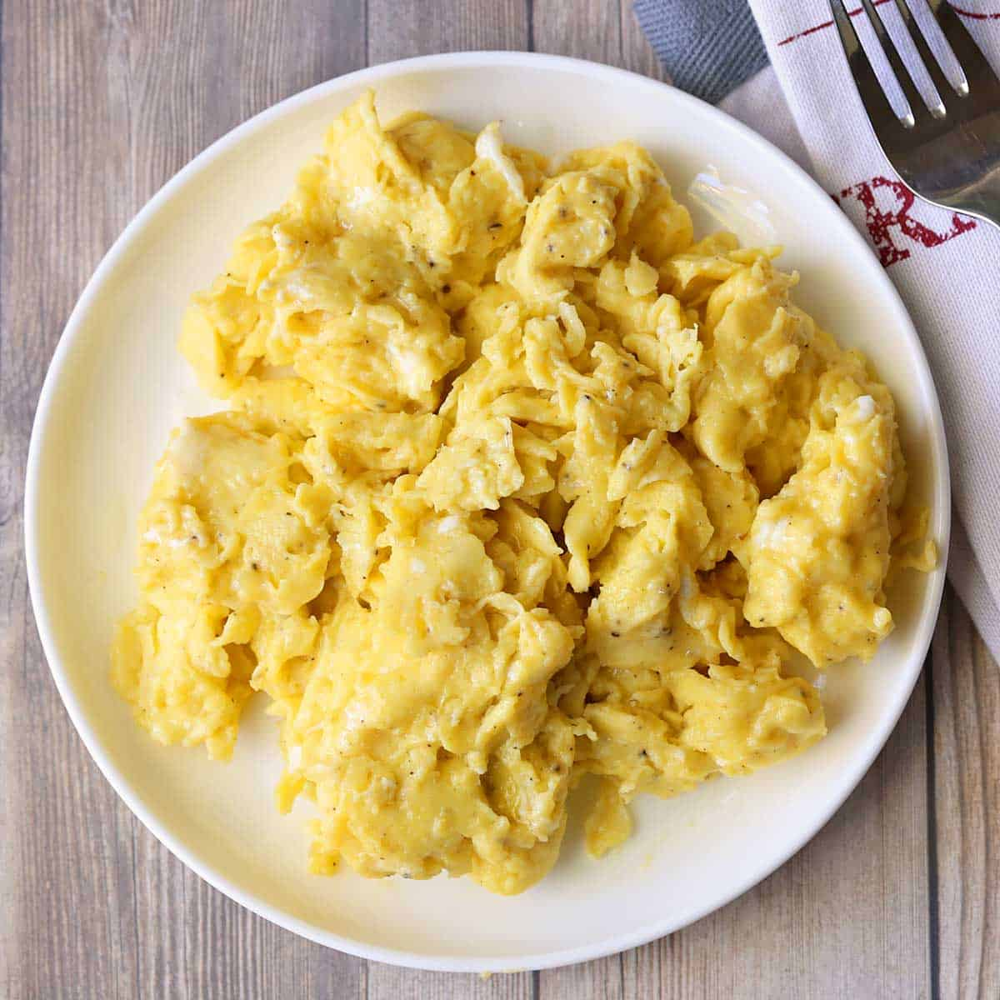

Soft Scrambled Eggs

Light and fluffy scrambled eggs
Best way to start your day!
Ingredients & Equipment
- 3 raw eggs
- salt
- black pepper(optional)
- butter 2tbs
- non-stick pan
- spatula
instructions
- Crack your eggs in a bowel
- Add a large pinch of salt and your prefered amount of peper.
- Preheat a pan to medium low heat and add butter.
- Pour in egg mixture as eggs begin to set, gently move spatula across bottom and side of pan to form large, soft curds.
- eggs are done when no visible liquid egg remains and the eggs look slight overcooked, as the residual heat will finish cooking them.
- Let your chicken rest for 10-15min before eating, enjoy!